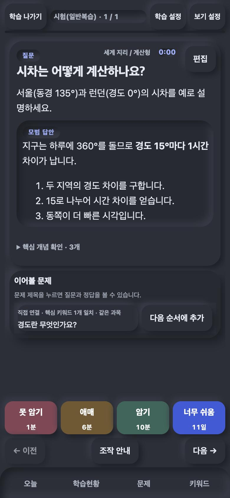
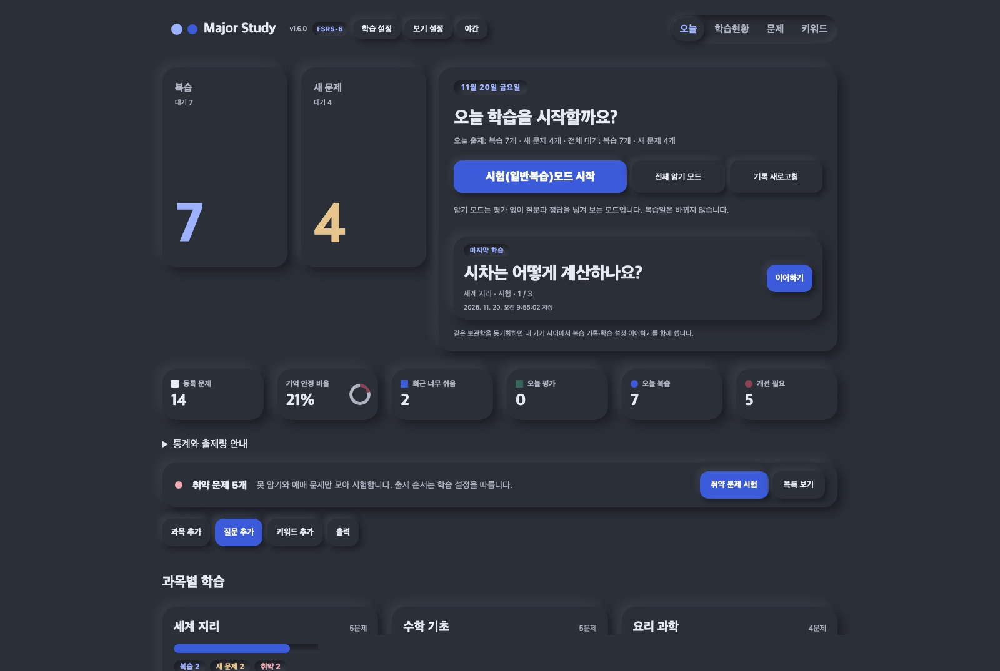
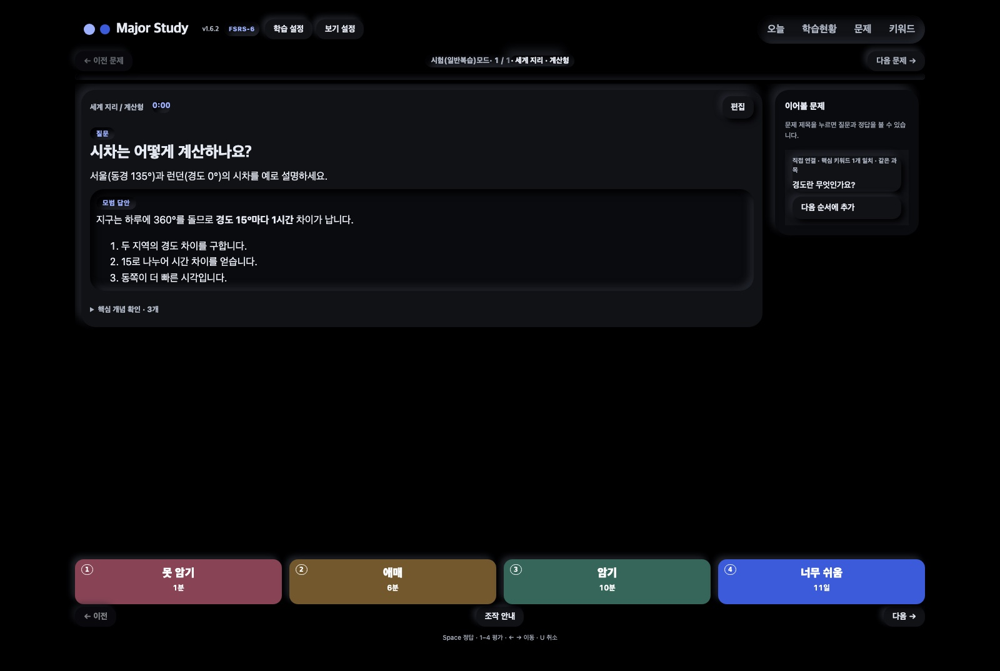
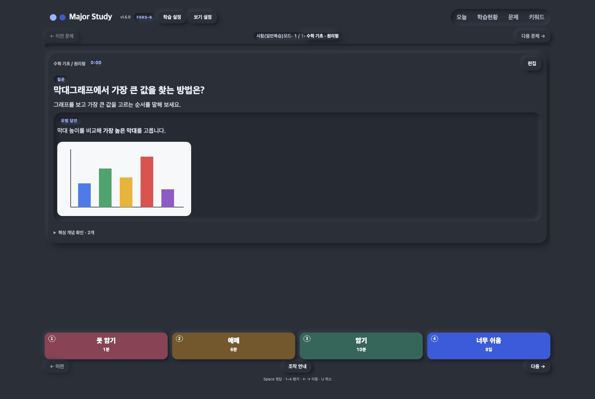
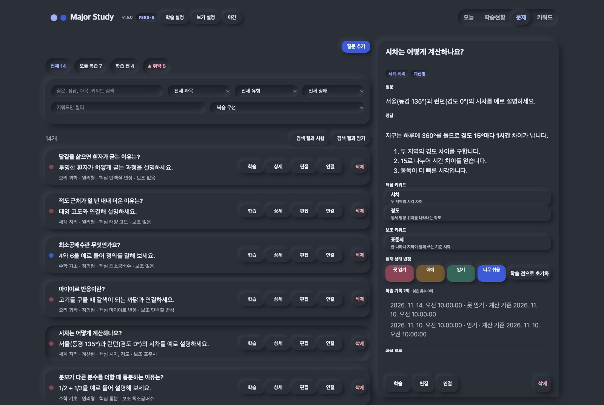
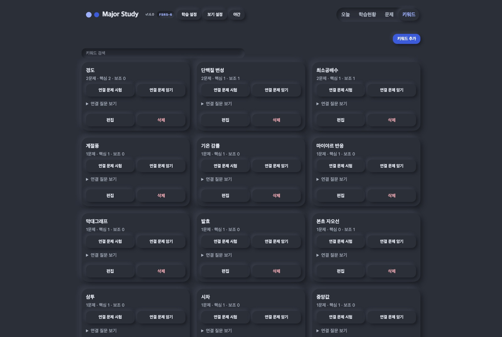
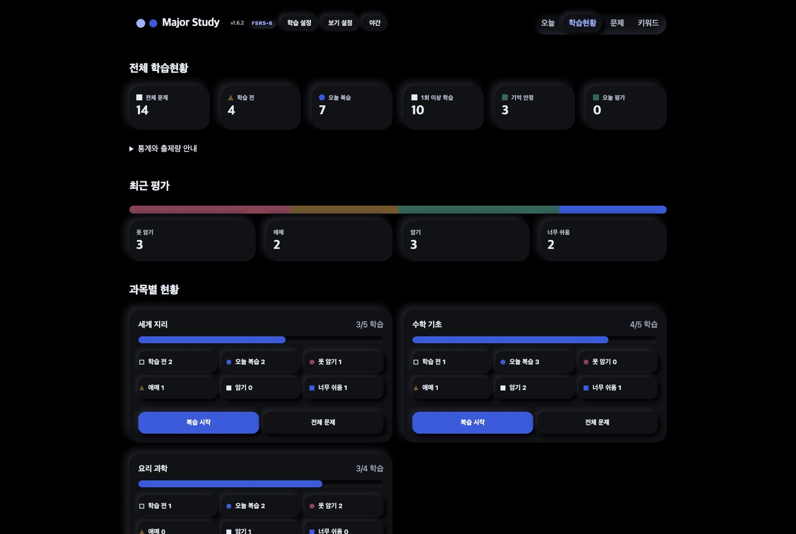
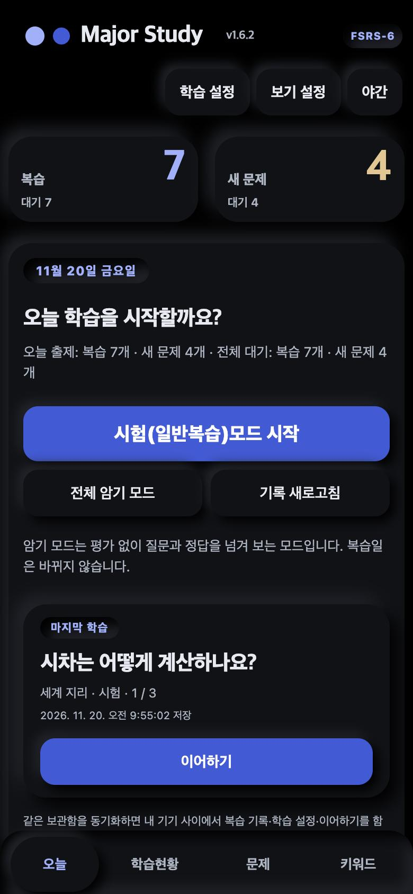

질문을 모으고,
잊기 전에
다시 꺼낸다.
Obsidian 안에서 과목·질문·키워드를 폼으로 관리하고, FSRS-6로 복습 시점을 잡아 주는 공부 플러그인. Markdown을 직접 쓰지 않아도 되고, 문제마다 노트를 만들지도 않습니다. 플러그인 화면은 완전 검정 바탕 위에 그림자로 솟고 파인 둥근 카드를 쓰는 어두운 소프트 뉴모피즘입니다.


세 단계로 시작
01과목 추가
리본의 뇌 아이콘이나 명령 팔레트의 MIA Study 열기로 시작해 과목을 만듭니다. 과목 폴더와 문제은행 노트가 자동으로 생깁니다.
질문 추가
과목·질문·정답·유형과 핵심·보조 키워드, 각 키워드의 의미를 폼에 입력합니다. 키워드 의미 노트도 함께 만들어집니다.
시험 시작
오늘 화면의 시험(일반복습)모드 시작을 누르면 오늘 복습할 문제와 새 문제가 나옵니다. 평가할 때마다 다음 복습일이 정해집니다.
기본값: 하루 새 문제 20개 · 복습 200회 · 하루 시작 오전 4시 · 학습 단계 1분 → 10분 · 목표 기억률 90%
기능
02떠올리고, 네 단계로 평가
시험(일반복습)모드는 정답을 가린 채 시작합니다. 답을 떠올린 뒤 정답을 보고 평가하면, 다음 복습 간격을 각 평가 버튼에서 확인할 수 있습니다.
- 못 암기
- 정답을 떠올리지 못했을 때
- 애매
- 기억은 났지만 어렵게 떠올렸을 때
- 암기
- 무리 없이 떠올렸을 때
- 너무 쉬움
- 바로 떠올라 간격을 크게 늘려도 될 때
- LaTeX 수식(
$…$,$$…$$)을 Obsidian과 똑같이 렌더링 - 정규 복습은 Anki처럼 기한일 단위로 출제 — 매일 같은 시간에 공부해도 하루씩 밀리지 않음
- 1분·10분 학습 단계는 정확한 시각에 같은 세션에서 다시 출제
- 답변 타이머: 카드 머리줄에
0:12처럼 떠올린 시간이 흐르다 정답을 보면 멈춤(최대 60초, 앱이 숨겨진 동안은 안 셈). 복습 일정에는 쓰이지 않고, 보기 설정 → 답변 타이머에서 끌 수 있음(기본 켜짐) - 정답을 보기 전에는 질문만 보이고, 키워드 힌트는 없음(1.4.22)
Space 정답 · 1–4 평가 · ← → 이동 · U 직전 평가 취소

이미지·표·코드도 그대로
정답은 평범한 Markdown이라 Obsidian에서 쓰던 문법이 그대로 통합니다.
- 보관함 이미지 삽입
![[그림.png]] - 표, 목록, 굵은 글씨, 코드 블록
- 질문에도 수식과 서식 사용 가능

과목별 문제은행과 검색
질문을 추가하면 과목 폴더의 문제은행.md 한 파일에 정리됩니다. 과목을 바꿔 저장해도 문제 ID가 유지되어 복습 기록이 사라지지 않습니다.
- 과목·유형·복습 상태·키워드 필터와 한글 조합 검색
- 생성·수정일, 취약도, 애매 우선 정렬 · 50개 단위 페이지
- 검색 결과만 골라 바로 시험 또는 암기
- 질문마다 학습·상세·편집·연결·삭제

키워드로 개념 연결
핵심·보조 키워드마다 의미 노트가 생기고, 같은 키워드를 쓰는 질문끼리 묶입니다.
- 학습 중 키워드를 누르면 키워드 이름과
## 의미만 모범 답안 상자 스타일로 띄움(닫기·키워드 노트 열기) - 키워드별 연결 문제 시험·암기, 연결 질문 보기
- 이름을 바꾸거나 병합·삭제하면 모든 문제은행의 링크를 함께 갱신
- 학습 중 키워드·과목·유형·최근 평가로 관련 문제를 추천해 이어서 출제

학습현황과 취약 문제
전체·과목별로 학습 전, 오늘 복습, 기억 안정, 오늘 평가를 한눈에 보고, 숫자를 누르면 해당 문제만 모아 봅니다.
- 최근 평가 분포를 네 가지 색 막대로 표시
- 취약 문제: 오늘 화면의 취약 띠와 문제 탭의 "▲ 취약" 필터에서 못 암기·애매 문제를 복습 지연 시간까지 반영한 긴급도 순으로 정렬해 바로 시험
- 시험이 끝나면 평가별 개수·건너뜀·소요 시간과 평균 떠올린 시간 요약, 문제 상세의 복습 기록에는 떠올린 시간 표시

그 밖의 기능
시험(일반복습)모드 · 암기 모드
시험은 정답을 가리고 평가해 복습일을 정합니다. 암기는 질문과 정답만 넘겨 보며 기록을 바꾸지 않습니다(순서대로·랜덤).
직전 평가 취소
잘못 누른 평가를 그 직전의 복습 상태와 학습 순서까지 그대로 되돌립니다.
이어하기
마지막으로 본 위치를 저장해 오늘 화면에서 바로 이어갑니다.
Anki 스타일 학습 설정
하루 새 문제·복습 상한, 학습·재학습 단계, 목표 기억률, 출제 순서, 미리 학습, 평가 버튼별 고정 간격을 조정하고, 내 복습 기록으로 FSRS 매개변수를 최적화합니다.
꼬리질문 연결
기존 문제를 검색해 최대 50개까지 단방향·양방향으로 연결합니다.
과목별 Word 정리본
과목의 질문·답변 전체를 A4 서식의 .docx로 출력합니다. 표·목록·코드·보관함 이미지를 포함하고 수식은 LaTeX 표기로 보존합니다.
과목 노트 자동 동기화
질문을 추가·수정·이동·삭제할 때마다 과목별 질문 / 대답 요약 노트를 다시 정리합니다.
기기 간 동기화
같은 보관함을 동기화하면 복습 기록·학습 설정·이어하기를 여러 기기에서 함께 씁니다. 충돌한 평가는 버리지 않고 보관합니다.
자료를 지키는 저장
같은 이름의 사용자 노트는 덮어쓰지 않고, 닫히지 않은 코드 블록이나 깨지는 링크는 저장 전에 거절합니다.
Anki와 비교
031m 10m / 10m1m 10m / 10m. 첫 Hard만 Anki 5분 30초, MIA 6분Anki에는 없는 MIA만의 기능
Anki는 카드를 외우는 데 집중합니다. MIA는 전공 면접·구술시험처럼 질문과 내 답변 스크립트를 함께 관리하는 데 맞췄습니다. 아래 기능은 Anki 기본 기능에 없습니다.
면접 답변 스크립트 전체 출력
과목의 질문과 답변 전체를 A4 서식의 Word(.docx) 한 파일로 뽑습니다. 면접 직전에 스크립트처럼 통째로 읽거나 인쇄해 들고 갈 수 있습니다.
과목별 질문·대답 목록 노트
질문을 고칠 때마다 과목마다 질문: … / 대답: … 한 줄 목록 노트가 자동으로 갱신됩니다. 앱을 열지 않고도 Obsidian에서 훑어볼 수 있습니다.
꼬리질문 연결
면접관이 이어서 물을 질문을 최대 50개까지 단방향·양방향으로 묶어 둡니다. 시험 중에는 키워드·과목·최근 평가로 고른 관련 질문을 바로 이어서 풀 수 있습니다.
키워드 의미 노트
핵심·보조 키워드마다 뜻을 적은 노트가 생기고, 키워드 화면에서 그 개념이 나오는 질문만 모아 보거나 시험합니다. 태그보다 개념 단위로 정리됩니다.
내 노트가 곧 문제은행
문제는 보관함의 평범한 Markdown이라 Obsidian 링크·검색·그래프와 함께 쓰입니다. 이미 써 둔 노트 속 문제도 원문을 바꾸지 않고 그대로 등록합니다.
AI로 한 번에 가져오기
자료와 MIA-AGENT.md를 GPT나 AI 에이전트에 주면 중복을 건너뛰고 복습 기록을 지키면서 MIA 형식으로 정리합니다.
MIA에 없는 Anki 기능
덱 계층과 덱별 프리셋, 오늘만 한도, 형제 카드 묻기, 자주 틀리는 카드(leech) 자동 정지, 카드 정지·미루기, 오디오, 쉬는 요일(Easy Days)·복습량 분산(Load Balancing), SM-2, 초 단위 단계, 애드온, Anki 덱(.apkg) 가져오기.
같은 FSRS-6 가중치를 써도 단계·날짜·난수 처리가 모두 같지는 않아 복습일이 Anki와 하루 이틀 다를 수 있습니다. 설정 항목별 대응은 ANKI-SETTINGS.md에 있습니다.
모바일
04좁은 화면에서는 하단 탭과 평가 버튼이 각각 한 줄로 놓이고, 학습 화면 상단은 한 줄 막대로 줄어듭니다. 모바일에도 같은 검정 바탕 소프트 뉴모피즘이 적용됩니다.
키보드가 열리면 편집창과 검색·설정 화면이 키보드 위 높이에 맞춰지고, 선택한 입력칸이 보이도록 스크롤됩니다. 버튼은 44px 이상의 터치 영역을 씁니다. 화면 왼쪽 가장자리에서 쓸면 학습을 시작한 화면으로 돌아갑니다.
1.4.23부터 학습 화면은 iPad·휴대폰에서 좌우 폭을 거의 다 쓰고(작은 여백과 기기 안전 영역만 유지) 짧은 문답은 스크롤 없이 보입니다. 1.4.24부터 오늘·학습현황·문제·키워드 화면도 같은 방식으로 넓어진 폭에 맞춰 카드 열이 늘어납니다. 높이 390px인 iPhone 가로에서는 여전히 스크롤이 필요합니다.
모바일 사진은 실제 플러그인 화면을 브라우저에서 휴대폰 폭(390px)으로 렌더링해 찍었습니다.

내 보관함에 이렇게 저장됩니다
05MIA/<과목>/MIA/<과목>/문제은행.mdMIA/<과목>/<과목> 노트.mdMIA/키워드/<키워드>.md.obsidian/plugins/mia-study/data.json 질문은 평범한 Markdown 콜아웃이라 플러그인 없이도 읽을 수 있습니다. GPT 등으로 문제를 만들 때는 문제 작성 가이드를 쓰세요.
### 마이야르 반응이란 무엇인가요?
> [!question] 문제
> 마이야르 반응이란 무엇인가요?
^mia-q-…
> [!mia]- 학습 정보
> 유형: 정의형
> 핵심: [[MIA/키워드/마이야르 반응|마이야르 반응]]
> 보조: [[MIA/키워드/갈변|갈변]]
#### 정답
당과 아미노산이 열을 받아 갈색과
고소한 향을 만드는 반응입니다.여러 기기에서 쓰기
06MIA는 파일을 직접 전송하지 않습니다. 기록이 보관함 안의 평범한 파일에 저장되므로, 보관함 폴더를 기기 사이에 맞춰 주는 도구라면 무엇이든 같은 원리로 씁니다.
범용 동기화 폴더 켜기
- 모든 기기에 같은 최신 MIA를 설치합니다.
- 한 기기에서 학습 설정 → 내 기기 간 동기화 → 범용 동기화 폴더 사용을 누릅니다. 기존 기록을 복사·병합하고 원래 파일은 보존합니다.
- 보관함에
MIA Study Sync/폴더(Markdown 3개)가 생깁니다. 숨김.obsidian폴더를 옮기지 않는 도구로도 노트와 함께 전달됩니다. - 다른 기기에서 파일 수신이 끝나면 Obsidian을 다시 시작합니다. 공유 폴더를 자동으로 인식합니다.
Windows + Android Syncthing
- Windows에 Syncthing, Android에 Syncthing-Fork를 설치합니다(공식 Android 앱은 개발 종료).
- Android 보관함은 공용 저장소(예:
Documents/)에 두고, 앱에 모든 파일 접근 권한을 주며 배터리 최적화에서 제외합니다.Obsidian/ - 두 기기를 서로 추가하고 보관함 폴더 전체를 공유합니다. 양쪽에 자료가 있으면 먼저 백업합니다.
- 무시 패턴에 화면 배치 파일을 넣습니다.
.obsidian/workspace.json .obsidian/workspace-mobile.json - 한 기기에서 범용 동기화 폴더를 켭니다.
Syncthing은 두 기기가 동시에 켜져 연결돼 있을 때만 전송합니다. 노트북을 덮은 채 폰에서 한 학습은 노트북을 켠 뒤 넘어갑니다.
동기화가 이루어지는 방식
동기화 도구는 파일을 통째로 옮기기만 하고, 기록을 합치는 일은 MIA가 합니다.
저장하고 확인
평가할 때마다 기록 파일에 저장하고, 다시 읽어 실제로 저장됐는지 확인합니다.
돌아올 때 합치기
Obsidian을 켤 때, 창이나 앱으로 돌아올 때, 기록 새로고침 때 받은 파일을 읽어 자기 기록과 합칩니다.
문제마다 마지막 평가
평가마다 시각이 담긴 수정 번호를 붙이고, 두 기기의 기록이 다르면 더 최신 평가를 씁니다.
진 기록도 보관
엇갈린 쪽 기록은 버리지 않고 충돌 기록으로 남겨 학습현황에 알립니다. 서로 다른 이력을 이어 붙여 일정을 망치지 않습니다.
설정·이어하기
설정이 다르면 하나를 적용하고 나머지는 보관된 설정으로 남깁니다. 이어하기는 더 최근 위치를 씁니다.
덜 도착하면 경고
동기화 폴더가 일부만 도착했으면 경고합니다. 그때 남긴 평가는 그 기기에만 저장되니 동기화를 마치고 다시 시작하세요.
주의 사항
한 번에 한 기기
한 기기에서 학습 → 동기화 완료 확인 → 다른 기기에서 열기. 두 기기에서 동시에, 또는 오프라인으로 각자 학습하는 것이 충돌의 가장 흔한 원인입니다.
충돌 사본은 지우지 않기
*.sync-conflict-*.md나 conflicted copy 같은 사본은 MIA가 읽지 않습니다. 앱이 꺼져 있던 기기의 평가가 그 안에만 남을 수 있으니 백업하세요.
모든 기기 같은 버전
이전 버전은 새 저장 위치와 수정 번호를 알지 못하고, 1.4.25 이하는 다시 저장할 때 떠올린 시간(answer_ms)을 빠뜨릴 수 있습니다. 업데이트를 위해 MIA 스위치를 껐다 켜지 마세요. 꺼진 상태가 퍼질 수 있습니다.
전송 도구는 하나만
한 보관함에 Syncthing과 Remotely Save처럼 두 도구를 함께 쓰지 않습니다.
직접 편집 금지
MIA Study Sync/ 파일은 MIA가 관리합니다. 열어서 고치지 마세요.
동기화는 백업이 아님
한 기기의 손상·삭제가 그대로 퍼집니다. 보관함 밖에 따로 백업하세요.
iCloud 외 조합(Windows·Android·Syncthing·Dropbox 등)과 충돌 사본 처리는 실기기로 검증하지 않았습니다. 처음엔 백업한 뒤 문제 몇 개를 한 기기에서 평가하고, 다른 기기에 기록이 넘어오는지 먼저 확인하세요.
설치
07BRAT 추천
- BRAT 플러그인을 설치하고 켭니다.
- 명령 팔레트에서 아래 명령을 실행합니다.
BRAT: Add a beta plugin for testing - 저장소 주소를 입력합니다.
https://github.com/kimchi-kang/ mia-study-obsidian - 커뮤니티 플러그인에서 MIA Study를 켭니다.
업데이트도 BRAT에서 합니다.
ZIP 직접 설치
- 보관함을 백업하고 Obsidian을 닫습니다.
- ZIP의
main.jsstyles.cssmanifest.json세 파일을 아래 폴더에 복사합니다..obsidian/plugins/ mia-study/ data.json,ui-state.json은 그대로 둡니다. 학습 기록이 여기 있습니다.- Obsidian을 다시 엽니다.
최신 업데이트
08부족한 문제 출력 · 시험(일반복습)모드 · 자주 틀림
- 1.6.3: 야간 모드를 MIA 화면에만 적용해도 MIA 창(설정·편집·상세 등)이 함께 적색이 되고, 켜진
야간버튼은 파란 면으로 표시합니다. 데스크톱 별도 창에도 적용되고, 기기 저장소 오류 때 멈추지 않습니다. - 1.6.2: 플러그인 화면 바탕을 완전 검정으로 바꾸고, 카드·버튼은 검정 위에 살짝 떠 보이는 아주 어두운 회색으로 맞췄습니다. 이 페이지와 화면 사진도 같은 검정 바탕입니다.
- 1.6.1: 검색·선택 입력칸 글자에 왼쪽 여백을 주고, 비어 있는 페이지 넘김 막대를 숨겼습니다.
- 1.6.0: 플러그인 화면을 어두운 소프트 뉴모피즘으로 바꿨습니다. 굵은 테두리·원색 대신 같은 색 바탕 위 그림자로 솟거나 파인 둥근 카드·버튼을 씁니다.
- 1.5.8: 첫 화면의
야간버튼(또는 명령)으로 적색 야간 모드를 켭니다. 기본은 Obsidian 전체, 보기 설정에서 MIA 화면만으로 바꿀 수 있습니다. - 1.5.7: MIA 설정 맨 위에
업데이트 확인버튼을 넣었습니다. 누르면 BRAT으로 새 버전을 확인·설치합니다. - 1.5.6: 노트 없는 키워드의 뜻을 저장할 때 질문 링크가 가리키는 폴더에 노트를 만듭니다.
- 1.5.5: Word 출력의
%이미지·$처리, 최적화 중단, 중복 ID 경고, 꼬리질문 한도 안내, 폴더 입력, 옛 도움말 문구, 충돌 창을 정리했습니다. - 1.5.4: 노트 없는 키워드 편집·삭제, 순서대로 암기의 목록 순서, 꼬리질문 링크 원문 보존, 답변 타이머 멈춤을 고쳤습니다. BRAT에 계정 이름을 바꾸기 전의 예전 주소로 등록했다면
kimchi-kang/mia-study-obsidian으로 다시 추가하세요. - 1.5.3: 질문 편집 창의 키워드 의미를 키워드마다 따로 입력하게 해 다른 키워드 노트를 덮어쓰던 버그를 고쳤고, 끊어진 꼬리질문 링크로 삭제·수정이 실패하던 문제와 학습 중 보기 설정 미반영을 고쳤습니다.
- 1.5.2: 기기 간 충돌로 보관된 기록을 지울 수 있게 하고, 최적화 안내 숫자·30초 자동 새로고침·Word 출력의 자주 틀림 순서·추천 키워드 매칭·답변 타이머를 고쳤습니다.
- 1.5.1: 과목 Word 출력에서 부족한 문제만 뽑거나, 전체를 부족한 순서(자주 틀림 → 못 암기 → 애매 → 복습할 차례 → 학습 전)로 출력할 수 있습니다.
- 1.5.0: 시험 모드 이름을 Anki 일반 복습과 같은 뜻이 드러나도록 시험(일반복습)모드로 바꿨습니다.
- 1.4.29: Anki처럼 8번 이상 잊은 문제를 자주 틀림으로 표시하고(목록 배지·필터·상세), 시험(일반복습)모드에 자동 진행(정해진 시간 뒤 정답 공개·다음 문제, 기본 꺼짐)을 넣었습니다.
- 1.4.27~1.4.28: 화면 변화 없는 내부 안정화와 스타일 정리(경쟁 조건 2개 수정, 오류 기록,
styles.css33% 축소). - 1.4.26: 시험(일반복습)모드에서 정답을 볼 때까지 걸린 떠올린 시간을 Anki처럼 보여 주고 기록합니다. 최대 60초, 복습 일정에는 영향 없음.
보기 설정에서 끌 수 있습니다. - 1.4.25: 키워드를 누르면 노트 전체 대신 키워드 이름과 의미만 학습 화면과 같은 스타일로 보여 줍니다.
- 1.4.23~1.4.24: iPad·휴대폰에서 학습·오늘·학습현황·문제·키워드 화면이 좌우 폭을 거의 다 쓰고, 짧은 문답은 스크롤 없이 보입니다.
- 1.4.22: 시험(일반복습)모드에서 정답 보기 전의 키워드 힌트 버튼을 없앴습니다.
1.4.20: 읽기 전용 암기 모드.
전체 변경 이력 →검증
091.6.3 자동 검사 통과 2,039·실패 0·생략 2, 타입 검사·배포 빌드 통과.
1.4.12 배포 파일로 macOS Obsidian에서 모든 탭과 시험·암기, 평가·취소, 재시작을 확인했습니다. 1.4.23 이후의 화면 변경은 브라우저에서 렌더한 측정으로 확인했습니다.
iOS·Android 실기기(iPad·휴대폰 화면 폭 포함), OS 키보드, 두 기기 실시간 동기화는 직접 확인하지 않았습니다.
자주 묻는 질문
10업데이트하면 기존 복습 기록이 사라지나요?
아니요. 기록과 설정은 data.json·ui-state.json에 있고, 업데이트는 main.js·styles.css·manifest.json만 바꿉니다. 1.4 계열은 기존 기록을 그대로 읽습니다. 1.4.19에서 늘어난 설정 항목(미리 학습)은 값이 없으면 기본값으로 읽고, 1.4.26의 떠올린 시간(answer_ms)은 없는 기존 기록도 그대로 읽습니다. 그래도 업데이트 전에 보관함을 백업해 두세요.
시험(일반복습)모드에 시간이 흐르는 건 뭔가요? 복습 일정에 영향이 있나요?
1.4.26의 답변 타이머입니다. 문제가 나오면 카드 머리줄에 떠올린 시간이 흐르고 정답을 보면 멈춥니다. 앱이 숨겨진 동안은 세지 않고 최대 60초(1:00+)까지 셉니다. 평가할 때 복습 기록에 함께 저장되지만 FSRS 복습 일정과 내 기록으로 최적화에는 쓰이지 않습니다. 보기 설정 → 답변 타이머를 끄면 화면에서만 숨기고 기록은 계속합니다. 암기 모드에는 나오지 않습니다. 평균은 학습 완료 창, 문제별 시간은 문제 상세에서 봅니다. 1.4.25 이하 버전이 같은 기록을 다시 저장하면 이 값이 빠질 수 있으니 모든 기기를 함께 업데이트하세요.
시험(일반복습)모드의 키워드 힌트 버튼이 없어졌어요.
1.4.22에서 일부러 없앴습니다. 정답을 보기 전에는 질문만 보고 답을 떠올리도록 한 변경입니다. 정답을 본 뒤의 핵심 개념 확인, 키워드 화면, 암기 모드의 표시는 그대로입니다.
수식이 수식으로 안 보이고 글자 그대로 나와요.
원문에 $...$ 또는 $$...$$ 구분자와 TeX 문법이 있어야 수식으로 표시됩니다. 30° ÷ 15° = 2처럼 구분자가 없는 문장은 자동으로 수식이 되지 않습니다.
새 버전을 깔았는데 화면이 그대로예요.
Obsidian을 완전히 껐다 다시 켜야 새 파일을 불러옵니다. 실행 중인 버전은 Major Study 제목 옆에 표시됩니다.
휴대폰과 컴퓨터에서 같이 쓸 수 있나요?
같은 보관함을 Obsidian Sync·iCloud 등으로 동기화하면 복습 기록·학습 설정·이어하기를 함께 씁니다. 모든 기기를 같은 MIA 버전으로 맞추세요. 실제 두 기기 동기화는 아직 직접 검증하지 않았습니다. 여러 기기에서 쓰기를 보세요.
iCloud 말고 다른 동기화(Windows·Android)도 되나요?
MIA는 보관함 안의 파일에 기록을 저장하므로, 보관함 폴더를 맞춰 주는 도구라면 원리상 됩니다. Windows + Android는 Syncthing(무료)이나 Obsidian Sync를 권합니다. 범용 동기화 폴더를 켜고, 한 기기에서 학습을 마치고 동기화가 끝난 뒤 다른 기기를 여세요. 이 조합은 실기기로 검증하지 않았습니다. 설정 방법과 주의 사항을 보세요.
Anki와 무엇이 다른가요?
복습 알고리즘(FSRS-6)과 학습 단계·하루 경계·미리 학습·매개변수 최적화는 같은 방식입니다. 카드가 Obsidian 보관함의 Markdown으로 남고 키워드 노트로 개념끼리 연결된다는 점이 다르고, 덱 계층·카드 정지 같은 일부 기능은 없습니다. Anki와 비교 표를 보세요.
백업은 어떻게 하나요?
과목 폴더의 문제은행.md, 키워드 노트, .obsidian/의 data.json·ui-state.json(기기 간 동기화를 켰다면 MIA Study Sync/ 폴더도)을 보관함 밖의 다른 장소(외장 드라이브, 다른 클라우드, Git 등)에 주기적으로 복사하세요. 동기화는 백업이 아닙니다. 주의 사항을 보세요.
이미 정리해 둔 문제를 한꺼번에 넣을 수 있나요?
문제 자료와 MIA-AGENT.md를 GPT나 파일을 편집하는 AI 에이전트에 함께 주면 MIA 형식의 문제은행으로 정리해 줍니다. 기존 Markdown 문제는 문제 화면의 등록하지 않은 문제 후보에서 등록할 수 있습니다. 외부에서 고친 뒤에는 명령 팔레트의 MIA Study: 과목 노트 다시 동기화를 실행하세요.
버그는 어디에 알리나요?
GitHub Issues에 남겨 주세요. 명령 팔레트의 MIA Study: 시작 상태 확인 결과와 기기·Obsidian 버전을 함께 적으면 원인을 찾기 쉽습니다. 개인 문제·답안 파일은 올리지 마세요.
Obsidian 커뮤니티 플러그인 목록에서 찾을 수 있나요?
아직 등록 전이라 BRAT 또는 ZIP으로 설치합니다.
출처와 라이선스
11복습 알고리즘
- FSRS — Jarrett Ye와 Open Spaced Repetition. FSRS-6과 기본 가중치 21개를 씁니다.
- Ye, Su, Cao. A Stochastic Shortest Path Algorithm for Optimizing Spaced Repetition Scheduling. KDD 2022.
- Su, Ye, Nie, Cao, Chen. Optimizing Spaced Repetition Schedule by Capturing the Dynamics of Memory. IEEE TKDE 2023.
- ts-fsrs (MIT) — 복습일 계산
- fsrs-rs (BSD-3-Clause) — 매개변수 최적화를 이 학습 절차대로 TypeScript로 다시 구현
참고한 앱
- Anki (AGPL-3.0-or-later) — 설정 이름·기본값·동작을 참고했고 코드는 쓰지 않았습니다.
- MIA Study는 Anki·Obsidian·Open Spaced Repetition과 관계없는 개인 프로젝트입니다.
포함된 라이브러리
- markdown-it (MIT) · docx (MIT) · JSZip (MIT) · pako (MIT·zlib)
- 전체 목록과 라이선스 전문: THIRD-PARTY-NOTICES.txt
도구와 디자인
- 코드와 문서 대부분을 Claude Code(Anthropic)와 Codex(OpenAI)로 작성했습니다.
- 모든 출처: CREDITS.md